A common practice in projects is to modularise components to reuse them elsewhere, as follows:
Have Adroit 8 (MAPS 3) or later installed.
Note: If you are using a version later than this then this how to will probably also apply to your version too, although some dialogs and/or commands may have changed slightly.
Wizards: Wizards allow you to reuse the same graphical object and its assigned Behaviours (if any), over and over again, with different values (data elements), without having to recreate this object from scratch ever time. In other words, a wizard is a reusable design-time object, much like a Windows control. Also wizards have the facility to update their instances that have been added to graphic forms to their current configuration, when they are modified after having been used. For details, see How to create and use wizards.
Use the Favorites tool window, which:
Note: Projects and their folders provide a Preview Graphic Forms option to displays thumbnail snapshots of all the graphic forms located in their immediate or root level to either open the required graphic form or populate the Favorites tool window. For details, see Previewing graphic forms.
Manually create and manage a library of graphical components: Another method of design-time reuse is creating a library of graphical components that can be copied and pasted to the required graphic forms and then connecting the necessary values to the properties of these components. In this case, you can export the required graphical components to XML files and then simply drag the file into a graphic form that is being designed in the SmartUI Designer. For details, see How to export a graphical component to a XML file.
Although this reduces the amount of repetition required, it does not eliminate the task of reconnecting the data every time to every new component. Furthermore, should the specification of a component change (say its look and colors) then the user would need to go and manually update every instance of this component.
Mapping spiders: Facilitates the simple connection of data to the required properties of this reusable graphical component. In other words, this eliminates the process of manually locating the properties of the reusable graphical component, in order to provide their values with live data.
While using Mapping spiders makes it easier to map data to the properties of controls, it does not solve the problem of having to update every instance of a graphical component should a global change be required.
This document also explores other techniques that you can use to implement a highly reusable component system.
Template GOs: By using a TemplateGO control, a graphic form can behave as a reusable graphical component. The advantage of this is that any changes made to it can immediately become available in all the places where this graphic form is used.
SmartUI Templates are reusable graphic forms that can be used at run-time.
The fundamental difference between a graphic form and a SmartUI Template is that a SmartUI Template has aliases, some of which are automatically created, which allow data elements within Behaviours and/or spiders to be dynamically driven.
Typically SmartUI Templates are used for graphic forms that are displayed as pop-ups or within TemplateGO controls. For more details about using aliases, see Working with aliases.
controls. For more details about using aliases, see Working with aliases.
IMPORTANT: The default action for values entered into the Aliases tab of the Advanced View has been changed to always specify the text that is either manually entered or browsed in, unless the Use Tag Value checkbox is checked, at which time it will try to resolve the required data element value from the entered (typically browsed in) text.
Therefore when passing substitutions or aliases, in curly {} brackets, ensure that the Use Tag Value checkbox is NOT checked, which is its default setting.
When launching child SmartUI Templates from a parent SmartUI Template, you can automatically use the alias values of the parent SmartUI Template, instead of manually assigning values to the aliases of each child. For details, see Passing alias values from parent to child.
Aliases allow you to expose specific properties of each graphic form (and/or their form components) that you add so that you can configure these properties and hence customise each SmartUI Template like any other form component that you add to a graphic form.
Aliases can be automatically created for you, by using {} notation, in the following instances:
Use {} notation to specify aliases,  as follows:
as follows:
For example: {tag} or by concatenating a number of hierarchical levels for this data element , for instance: {AS}.{tag}
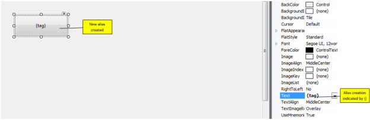
If you need to expose any other property of the graphic form or its configured form components, then you need to manually add the required alias to a graphic form and then manually assign them to the required properties of this graphic form and/or its added form components via the Spider Configuration tool window. For details on how to configure aliases in this manner, see Working with aliases.
Using SmartUI Templates as run-time reusable graphic objects.
The following three options are provided when dragging or copying a graphic form or SmartUI Template onto a graphic form:
IMPORTANT: When copying SmartUI Templates ONLY use the Graphic Form by Reference option as this is the ONLY option that creates TemplateGO controls so that you can configure its aliases.
Use this method, if you want ALL the copies of this graphic form to look the same and be centrally configuration.
In other words, when you modify the original (copied) graphic form ALL of its copies on other graphic forms are immediately updated.
However, this means that any change made to a copy will be OVERWRITTEN when the original graphic form is modified.
Configuring the Graphic Form by Reference:
Use this method if you need to customise most of the copies.
This method requires less administration but you need to configure EACH copy manually.
Configuring the Graphic Form by Instance:
However, using SmartUI Templates are not desirable if you simply want to reuse a graphic form directly without making any copies or containing that form in other forms using a TemplateGO control.
Spider Template Sets, which are named collections of silks, are ideally suited for this application. When a template set is active then all the silks that belong to that template set are active and allow communications from one spider to the next. In this way it is possible to control which data is communicated to which properties.
In addition, a spider engine with this template set configuration can be exported and imported, making for simpler bulk configuration.
PLEASE NOTE: Spider template sets have nothing to do with TemplateGOs or SmartUI Templates and should not be confused with them!
A Wizard is a pre-drawn and/or pre-configured skeleton of graphical
objects and their assigned Behaviours (if any), which has placeholders (substitutions) for data elements, which can simplify and speed up the task of creating graphic forms. But, instead of directly specifying
the values that drive these Behaviours, these are replaced with value
Each time a wizard is inserted into a graphic form, a dialog is displayed whereby values must be specified for all the substitutions that occur within this wizard. For instance, instead of redrawing a pump or a motor, each time one is required, a wizard can be created and simply inserted wherever a pump or motor is needed, at which time you link the required data elements (values) to its pre-defined substitutions.
You have two main options when creating wizards, typically in the Enterprise Manager window:
Either create the wizard from scratch: in this case, right click a project  or folder and select Create Wizard.
or folder and select Create Wizard.
Note: When creating a wizard from scratch, the default size of the wizard is 200 by 200 pixels, since wizards are typically small by nature. If necessary customise this default, by using the Designer.CONFIG setting in the Misc group, called DefaultWizardsize.
Or convert an existing graphic form into a wizard: in this case, open the required graphic form  and select the Save as Wizard graphic form toolbar button.
and select the Save as Wizard graphic form toolbar button.
Then use the Substitution configuration dialog to create ALL the necessary substitutions for this new wizard.
Tip: When you substitute a data element that is used in numerous locations within the graphic form, all these locations use the specified substitution name.
The graphic form toolbar contains the Optimise Graphic Form size button (at the end), which resizes the wizard to the size of the added controls and vectors, so that there are no overlaps at the top, bottom, left or right sides.
button (at the end), which resizes the wizard to the size of the added controls and vectors, so that there are no overlaps at the top, bottom, left or right sides.
Now design the graphical components of your wizard as you would a normal graphic form. When you get to the point of where you must specify data elements (values), e.g. when creating a behaviour, instead of browsing in a data elements you simply type in the substitution name with curly brackets around the name, e.g. {PUMP}. For details, see Working with Wizard substitutions.
After saving the wizard, you simply drag the wizard from the Enterprise Manager onto the graphic form where you want to use this wizard, at which point you’ll be prompted to assign valid data elements to the substitutions you specified in your wizard.
IMPORTANT NOTE: Since wizards are ONLY inserted into a graphic form, by instance NOT by reference, any subsequent change to the wizard will NOT be reflected in the instances of the wizard that you have ALREADY added to a graphic form, unless you update them again.
Tip: You can also drag a wizard onto the Templates tool window if you intend to use this frequently for quick access when designing other graphic forms.
If you change a wizard AFTER you have inserted it into one or more graphic forms, then you can choose which of these instances you want to update to the latest version. For details, see Updating wizard instances added to graphic forms.
SmartUI Templates can also be used when creating wizards that contain a pop-up that needs to “inherit” or use the tag data that is substituted when the user drops the wizard down on the form. For an example of configuring this, see How to create a Wizard that contains a Template pop up.
Tip: Wizards that display one or more SmartUI Templates can use their substitutions to drive the values of the aliases of these child SmartUI Templates. For details, see Driving aliases with wizard substitutions.
The simplest method of reusing graphical components is to simply export the required graphical components to a XML file and then simply drag this file into the required graphic form that is being designed in the SmartUI Designer.
Notes: Spiders are copied along with the controls and vectors that they belong to by default when you press CTRL+C, CTRL+ALT+C, through the right click menu or the toolbar. To prevent the spiders from being copied press and hold the Shift key down when copying or exporting your component.
Ultimately, data is connected to properties of controls or vectors, to animate them.
However, it is not always easy to know which property to connect the data to, especially considering the number of properties that a control can expose.
Mapping spiders can be used to simply this process, by providing a central location where the data for a reusable graphical component can be connected, without needing to manually locate the required properties. In other words, the user ties the data to the inputs of the Mapping spider, which are custom-named so that it is easy to identify which data point goes to which input.
This is made possible because the Mapping spider consists of input output pairs, so the user who creates the reusable graphical component also creates the Mapping spider and the required input-output pairs, which are named appropriately. Then the outputs of this Mapping spider are connected to the required properties and / or other spiders associated with this reusable graphical component.
Then when this graphical component is copied, the Mapping spider will be copied and pasted along with it.
How to use a Mapping spider with a reusable component
How to use a reusable component containing a Mapping spider
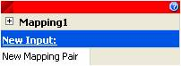
Figure 1 : Default Mapping spider configuration dialog
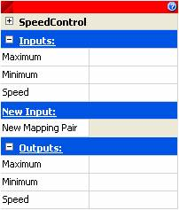
Figure 2 : Renamed Mapping spider with three mapping pairs added
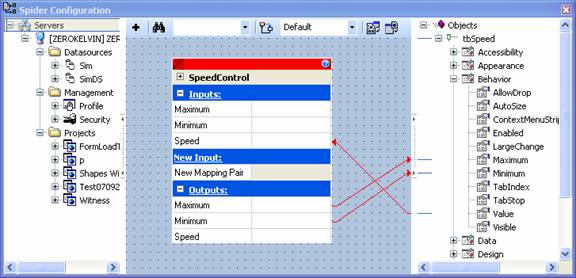
Figure 3 : Mapping spider with inputs and outputs connected from/to required properties
If the reusable component is located on another graphic form, copy that component, and paste it into the new form.
OR
If the reusable component is a XML file that is located on a disk, browse to the file and drag it into the form’s design surface, or copy and paste the file onto the design surface (using standard copy and paste commands).
Note: Selecting ‘Hide unselected spiders’ and selecting the component that was just pasted will highlight the associated Mapping spider.
While it is possible to use a Mapping spider to simplify the mapping of data to the properties of reusable graphical components, it would still be necessary to update every instance of this graphical component should a global change be required. This can be prevented, however, by using template graphic forms.
There is a control called a TemplateGO control, which has the unique ability to contain another graphic form. By using this control, it is possible to reuse a graphic form as a component in another graphic form.
Since this reusable component is actually a reference to another graphic form and not a copy of a reusable component, making changes to the reusable form can result in that change immediately becoming available in all the places where this graphic form is used.
Furthermore, just as reusable components allow data to be connected to them to animate them, it is also possible to create a reusable graphic form that can have data connected to it via the TemplateGO control. This is accomplished, through the Aliases property of the graphic form, which can contain any number of user defined data entry points to the graphic form. In other words any of the properties of the controls used on the graphic form can be exposed by this Aliases property.
Then when a TemplateGO control contains this graphic form, the Aliases property of the TemplateGO control exposes the Aliases property in this contained graphic form and the data entry points that have been configured so that data can be connected to them.
In this case the property spider associated with the Aliases property provides a central location from which data can be connected to these exposed entry points, much like the Mapping spider.
How to create a reusable graphic form
How to use a reusable graphic form in a TemplateGO control
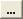
) button next to the property.
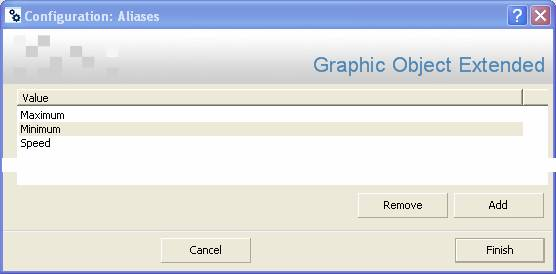
Figure 4 : Adding items to be exposed or driven by this graphic form to the Aliases property
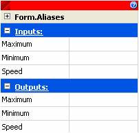
Figure 5 : Displaying the graphic form Aliases property spider with the added items
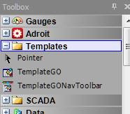
Figure 6 : Locating the TemplateGO control in the Toolbox window
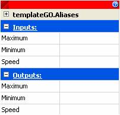
Figure 7 : Displaying the TemplateGO control Aliases property spider with the added items
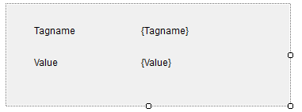
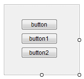
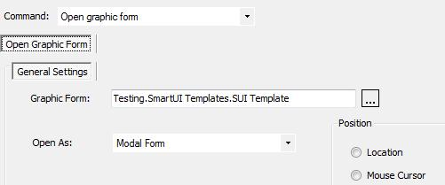
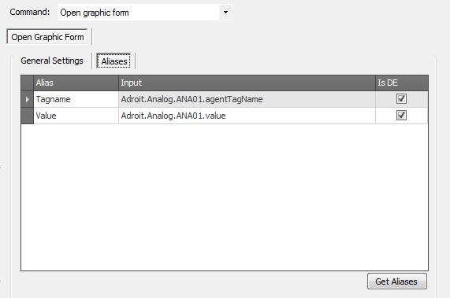
Once you’ve configured each button, clicking on each button in the Operator to display the same SmartUI Template but with different data element values.
The following are examples of what you see when you click each button, in turn:
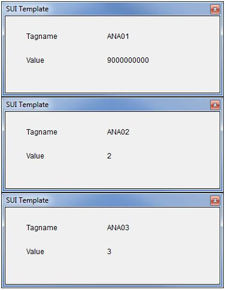
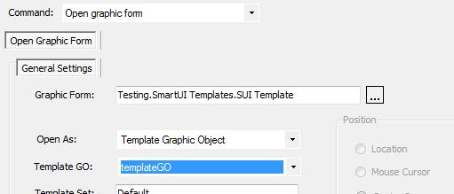
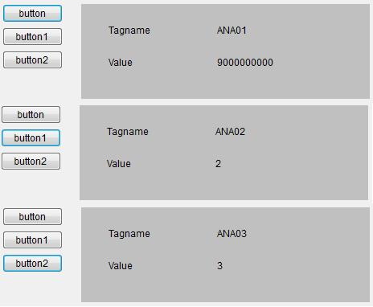
While template graphic forms are useful when a single graphic form is required in multiple locations, this feature is unable to reuse a graphic form directly.
In this case, the best approach is to configure the spider engine to contain multiple template sets.
PLEASE NOTE: Spider template sets have nothing to do with TemplateGOs or SmartUI Templates and should not be confused with them!
Template sets are essentially named collections of silks.
When the template set is active then all the silks that belong to that template set are active and allow communications from one spider to the next. In this way, it is possible to control which data is communicated to which properties and/or spiders.
Silks can belong to more than one template set. The Default template set is always active, so all the silks that belong to this template set are always active.
In addition, the Template Set spider allows the user to view and change the active template set at runtime.
Another advantage of using this method is that this template set configuration can be exported and imported via a Microsoft Excel readable XML spreadsheet, for simpler bulk configuration.
How to create a reusable form using spider template sets
How to use spider template sets
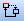
) Button.Note: If a silk should belong to more than one template set other than the Default template set, you can make the silk active for more than one set by right clicking on the silk and selecting the template set(s) that the silk belongs to under the ‘Template Sets’ sub menu.
Spider template sets can be used in two ways:
To load a form with a predetermined template set as active (in the form being loaded)
To load a form with a predetermined template set as active (in the form being loaded):
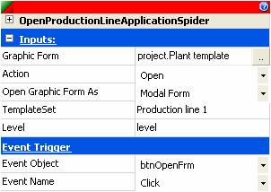
Figure 8 : Using the Application spider to load a graphic form with a specific template set
To switch template sets on a form that is already open, from that same form using the Template Set spider:
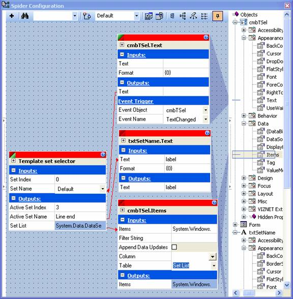
Figure 9 : Using the Template Set spider to specify the required template set